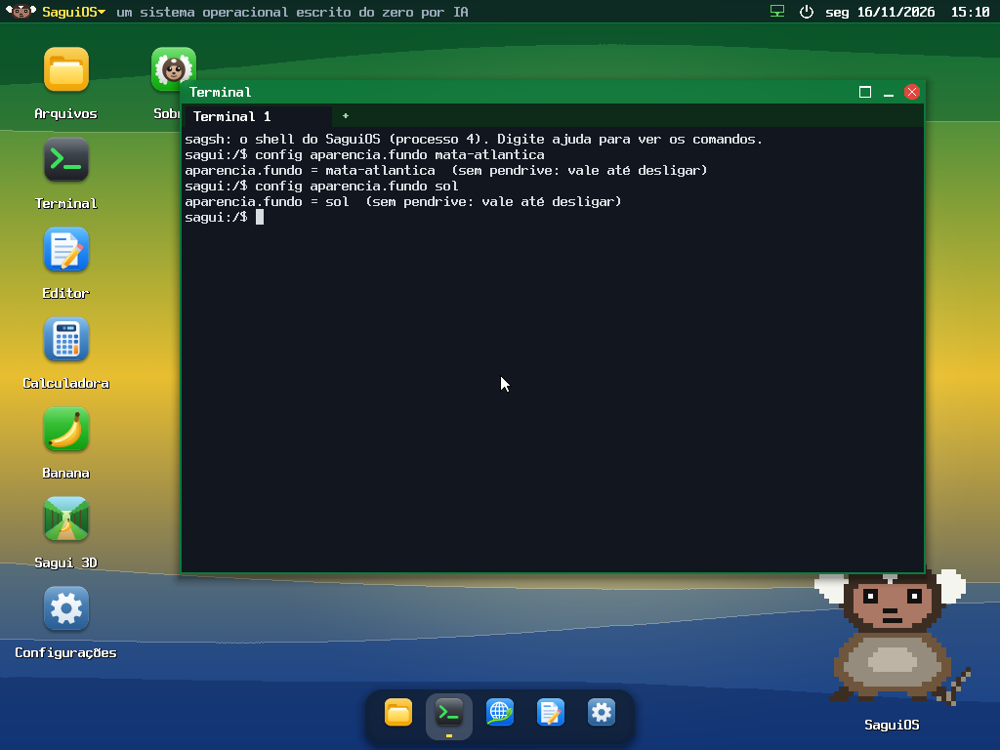

🧱 Do zero
Carregador de boot em dois estágios, kernel, drivers (teclado ABNT2, touchpad, vídeo VESA, USB 2.0, rede, som), sistema de arquivos FAT32, gerenciador de janelas e a fonte de letras.
Do carregador de boot ao jogo em 3D. Sem GRUB, sem libc, sem Linux por baixo. Dá boot num pendrive, em PCs x86 de 64 bits, e cabe em cerca de 8 MB.

Tudo o que vai dentro da imagem foi escrito neste projeto: nada de peças prontas no núcleo.
Carregador de boot em dois estágios, kernel, drivers (teclado ABNT2, touchpad, vídeo VESA, USB 2.0, rede, som), sistema de arquivos FAT32, gerenciador de janelas e a fonte de letras.
Menu Iniciar, doca, janelas, Arquivos com Lixeira, Terminal, Editor, Calculadora, Visualizador de fotos, Tocador de música e vídeo, Configurações e temas claro e escuro.
O Cipó abre páginas da web com HTTPS, favoritos e busca, direto no sistema, sem depender de nenhum navegador de fora.
Um assistente de IA que roda no próprio SaguiOS, no terminal, e conversa com você para ler arquivos e programar.
Sagui 3D, Sagui Pega Banana, Caça-Bananas, Paciência Banana, CHIP-8 e atividades JClic para a sala de aula.
O instalador só apaga um disco depois de um resumo e de você digitar o nome dele numa caixa do kernel. Fora isso, o SaguiOS nunca grava no disco interno.
🌎 O sistema fala português, espanhol e inglês (primeira parte da tradução).
Capturas reais do SaguiOS rodando. Clique para ampliar.
No canal do Eli no YouTube, o processo de criação do SaguiOS passo a passo.
🎬 O vídeo da criação do SaguiOS está no canal.
Assistir no YouTubeGrátis. Escolha o arquivo conforme o que você vai usar.
Imagem saguios.img (~8 MB). Grave com balenaEtcher ou Rufus em modo DD e dê boot pela BIOS tradicional.
Disco saguios.vdi (~8 MB), numa máquina Other/Unknown (64-bit) com EFI desligado.
A última versão de 32 bits, para processadores que não têm x86-64. Mesmos formatos de imagem e disco.
Ver a versão 2.2.0🔐 Confira o arquivo SHA256SUMS.txt depois de baixar. Todas as versões estão em Releases.
saguios.img acima.Prefere testar sem risco? Use o saguios.vdi no VirtualBox. Passo a passo completo em docs/como-gravar.md.
Tudo começou com uma pergunta do Eli Rigobeli: uma IA é capaz de escrever um sistema operacional de verdade, a partir de um kernel zerado? Não uma distribuição montada com peças prontas, mas o carregador de boot, o kernel, os drivers e os programas, tudo do zero, dando boot num notebook comum.
O Eli escreveu a especificação, o Claude (Anthropic) escreveu o código, e cada fase só avançou depois de o Eli testar no Lenovo G470 dele, um notebook de 2011.
Boot, kernel, janelas, USB e o jogo Sagui 3D, tudo escrito do zero e testado a cada fase num notebook de 2011. A imagem tinha só 575 KB.
Rede, internet com HTTPS, som, o primeiro navegador, um compilador de C dentro do sistema e o Sagui Code, a IA que programa com você.
Primeira versão com contribuições de outras pessoas: navegador Cipó com CSS e JavaScript modernos, tocador de MP3, vídeo e visual novo. O núcleo continua do zero.
O kernel passa a rodar em x86-64, com os programas de antes funcionando sem mudança. Chegam também o instalador em HD, jogos e o sistema em espanhol e inglês.
Ver o histórico completo de versões →
O SaguiOS cresce com a comunidade. Quer ajudar? Leia o guia de contribuição e abra uma issue ou um pull request.